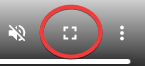

In this chapter we create a simple experiment, bit by bit, with instructions, stimuli, and responses, where the stimuli are pictures of dogs and cats, and the task is to identify whether the current trial’s animal is a dog or a cat using the keyboard to press ‘c’ for cat or ‘d’ for dog.
1.1 Instructions Routine
We start with a blank psyexp1
We then add:
- instructions to the participant about the task and which buttons to press - including an instruction to press space to continue.
- a keyboard component so the participant can press space to continue
During the course, I will show you live in PsychoPy while sharing my screen how to build this up. This website is intended to be used for reference after the course though, so I include a screencast of me building this up in Figure 1.1 below.
Tip
All the screencasts in this document can be viewed full-screen using the standard YouTube-style controls in the bottom-right:

During the course, you should reproduce this partial experiment on your own machine. The best advice is to build it up bit by bit yourself. However I will include links to download partial experiments and complete experiments every now and then in this document. See for example the blue box below. The links will be to zip files which you must extract properly before opening: in Windows right-click on the zip file and do “extract all”, then use the folder that appears without the ‘.zip’ file extension
Download
Click file1 to download the psyexp so far. Notice that these files have fullscreen unticked: you should change this by ticking the fullscreen box for real experiments. I’m only unticking fullscreen so that my screencast software can see the window.
Figure 1.2 is a screencast of PsychoPy running this (partial) experiment on my machine.
1.2 Trial Procedure
We now deal with what happens after they press ‘space’ to continue past the instructions screen.
On each trial we want to present one of our animal images for some duration during which the participant has the chance to type a response. If they don’t respond in time, we want the trial to time out, to encourage quick responses. Let’s say we want the duration to be one second, so it’s: “display the image for one second then take it off the screen, and they can only respond while the image is on screen.”
We want to record the RT and evaluate the response for correctness.
We want to add feedback saying “CORRECT!” in green ink, or “WRONG!” in red ink, or “RESPOND FASTER!” in black ink if they timed out.
Then we’ll have an inter-trial interval of one second, then start the next trial.2 We’ll run ten trials, and use 5 cats and 5 dogs.
1.3 Trial Sequence
In PsychoPy, you use a spreadsheet to define the trials of your experiment. The convention is that each row of the spreadsheet after the header row corresponds to a single trial. So to plan a sequence of 10 trials we need a spreadsheet with 10 rows after the header row.3.
If the rows represent trials, how should we think about the columns? Each column is an opportunity to pass in some property of that trial. In our cats and dogs experiment, each trial is going to need an image of a cat or dog. So we make a column called, say, “animal_image”4 which will hold the filename for the image you want to show on that trial – so the first row of “animal_image” might contain “cat1.jpg” and the second “dog1.jpg” and so on for ten rows.
We also have the opportunity to use the trial sequence spreadsheet to have a column saying, for each trial, what the correct answer is based on which kind of image is being presented in the same row / trial. See the column ‘expected_answer’ in Figure 1.3 that contains ‘c’ on rows where a cat is presented and ‘d’ on rows where a dog is presented.

If we do supply the expected answer like this, then, since everything we put in the input spreadsheet is available to the code at runtime, we can say things like the following to evaluate the response for accuracy:
if response.keys:
if response.keys == expected_answer:
feedback.text="CORRECT!"
feedback.text="green"
if response_keys != expected_answer:
feedback.text="WRONG!"
feedback.text="red"
else:
feedback.text="Timeout - please respond faster!"
feedback.text="black"1.4 Stimulus Files
We need to track down images of 5 cats and 5 dogs, and then name them according to the scheme in Figure 1.3
Download
Click stimuli to download the cats and dogs pictures
1.5 Making the trial loop
See Figure 1.4 for:
- add trials Routine
- add image
- set duration (1.0 seconds)
- use
$animal_imageforimage.Imagefield and change drop-down from constant to set every repeat
- add keyboard
- set allowed_keys field to
'c','d' - set duration to 1.0 seconds - now they won’t be able to respond after the image disappears. The keyboard’s start and stop times are the same as the image’s
- set allowed_keys field to
- enclose with loop
- The
Conditionsfield is where you put the name of the spreadsheet - leave ‘random’ - the default - but notice that sequential is also available
- change the default from 5 to 1 (because we only want to run the ten trials once)
- The
- add image
See Figure 1.5 for the runtime as things stand now.
Download
Click file2 to download the psyexp in a crude but working state.
1.6 Finessing the Trial Loop
At this stage things are basically working - the trial sequence is being randomised correctly; the images come up for the right amount of time; etc.
However we can improve some things quite easily going into the file3.psyexp
- add an inter-trial interval (0.5 seconds)
- set the images to be prepared during the inter-trial interval (better stimulus duration consistency)
- give the components names that will help us understand better what they do when we see them later in results files
- make the stimulus duration longer (the images were going by without responses because the duration was too short) - try 1.5 seconds.
- set the aspect ratio on the images to the original for the pictures to avoid the squashed look.
Figure 1.6 shows how to do this finessing.
Figure 1.7 shows the runtime now after a little finessing.
Download
Click file3 to download the file3 psyexp as it stands after a little finessing.
1.7 Handling the keyboard response
The keyboard component has 3 attributes. They are named using the name of the keyboard component (which is key_resp by default).
key_resp.keys: a list of the allowed keys that were pressed while the keyboard component was listening for key-presses. Usually this list only has one member, but it’s possible to collect multiple key-presses.key_resp.rt: simply RT, in seconds, i.e., how long the keyboard component was active for until an allowed key was pressedkey_resp.corr: accuracy coded 0 or 1, but it only exists in cases where you have requested it using theStore Correcttick-box of the keyboard component in thedatatab, and only then if you also supply the correct response in theCorrect answerfield (see screenshot)
In our file3.psyexp, we have supplied the correct answer on each trial in the column of the input spreadsheet called $expected_answer. If we then tick Store correct for the keyboard component in the stimulus presentation Routine, and fill out the field Correct answer, PsychoPy will create a variable response.corr that holds the accuracy on that trial as 0 or 1, and it will write that variable as a a column in the results file, with an entry on each row that was a trial.
Figure 1.8 shows how to set up the keyboard to record accuracy.
Figure 1.9 shows what it looks like in the results file after enabling accuracy recording.
1.8 Feedback
There are several ways to implement feedback in PsychoPy for stimulus-response experiments like our cats and dogs example. What they have in common is that they all assume that the response.corr variable that we looked at in Section 1.7 is available.
One style is to present the participant with text indicating whether they respond correctly or not for each trial.
Within that style there is more than one way to implement the feedback in PsychoPy.
- Method 1: One way is to insert a feedback Routine after the Trial Routine that contains a single Text Component whose contents and colour are set to variables whose values we calculate using a Code component, based on the value of
response.corr. See Figure 1.10 for a screencast of writing this method., and see Figure 1.11 for the runtime. This is file5.psyexp.
- Method 2: Another way is to insert the Feedback Routine after the Trial Routine, in the same way, but this time to create a Text component for each of the possible outcomes of the trial - normally correct and incorrect but also sometimes time-out. We then select one single outcome to display with reference to the value of
response.corr. This is file6.psyexp.
‘.psyexp’ is the file extension for a PsychoPy experiment, and in this document we use ‘psyexp’ to refer to PsychoPy experiments in the same way as we use ‘jpeg’ to refer to images with ‘.jpeg’ extensions and so on↩︎
It’s actually better to put the inter-trial interval before the trial. If you do it this way, then the inter-trial interval can be used to prepare the image for the trial – which is good because it improves the consistency of the stimulus duration.↩︎
If you want, say, the same trial contents but just repeated 10 times, there is a way to do it with one row representing that trial, and then telling PsychoPy to run the spreadsheet 10 times - but the ‘one row per trial’ way always works so it’s better to learn that way first↩︎
must not have any spaces in the column’s header↩︎